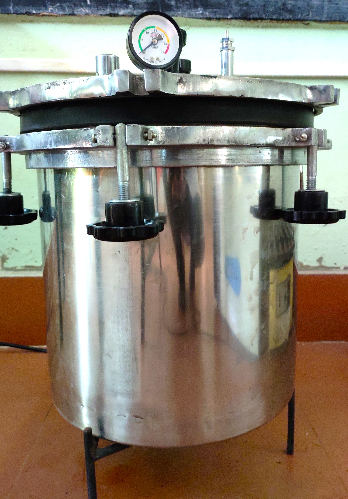

An autoclave uses pressurized steam as its sterilization agent. The basic concept of an autoclave is to have each item sterilized whether it is a liquid, plastic ware or glass wares that come in direct contact with steam at a specific temperature & pressure for a specific amount of time. It is usually operated at 15 lb/inch2 steam pressure for 30 minutes, this temperature for 30 minutes is enough to kill all spores & cells of micro-organisms.
- The items to be sterilized are placed inside a pressure vessel, commonly referred to as the chamber. It uses steam under pressure to kill harmful bacteria, viruses, fungi & spores on items that are placed inside a pressure vessel.
- Do not fill the autoclave chamber without lid.
- Do not use regular plastics or trays in the autoclave.
- Never autoclave flammable, reactive, corrosive, toxic or radioactive, household bleach or paraffin-embedded tissues.